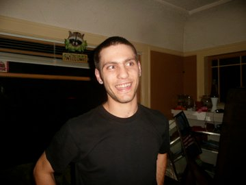

Andrew P. Malkin
About Me
Hello, my name is Andrew P. Malkin and this is my Portfolio Page. In this section I will be giving a brief overview of my life including my early life, college, coding experience and hobbies. I've created this website for two main reasons:
- To practice building a site using HTML and CSS.
- And so that I might share information about myself with others.
Let's get to it!
Early Life
I was born in Los Angeles, California but before I was even in grade school my family moved to Ojai, California. Ojai is about 60mi north of Los Angeles situated between Santa Barbara and Ventura. There I would attened Mira Monte Elementary School and later Villanova Prep. High School.
Even at a young age I have always been interested in computers, and if someone were to have asked me what I wanted to be when I grew up my response would have been Mathematician. After attending Villanova I was accepted at Reed College to study in their mathematics department
College
At Reed College I found out what it truly means to be a student of math. Over the course of my 5 years at Reed I would end up taking more than 15 math classes ranging from Single-Variable Calculus to Real Analysis. I was even able to take a few Computer Science classes including Intro to Programming and Algorithms and Data Structures.
This definitely fueled my passion in Computer Science and ultimately led to me signing up for Epicodus--a coding bootcamp in Portland, Oregon--on Aug. 1st, 2016.
Coding Experience
I first started programing in Visual Basic when I was still in middle school. My friend and I started making AOL progs for all sorts of things. I remember making a 'fader' for AOL which allowed the user to choose color options for the instant messenger and, as the name suggests, even allowed one to fade from color to color.
After VB6 I continued to play around with code here and there. Once I got to Reed however I started doing a lot more coding in Java and Python. Also at Reed I learned to code in Haskell. Haskell from me was great seeing as I was coming from a math background and the concepts of coding in a purely functional language really rang true to me.
Since then I have coded an Android app and an iPhone app. THe first app I did with a friend and it allowed Android users to better customize their experience with features like automatically toggling your wifi if you left the house. The iPhone app that I wrote I did on my own and it was a golf app allowing the user to keep stats on their game as they played. Both apps were pretty basic but it gave me a sense of what it takes to work on complete projects.
Hobbies
My biggest hobbies are:
- Golfing
- Coding
- Math
- Surfing
- Watching Movies